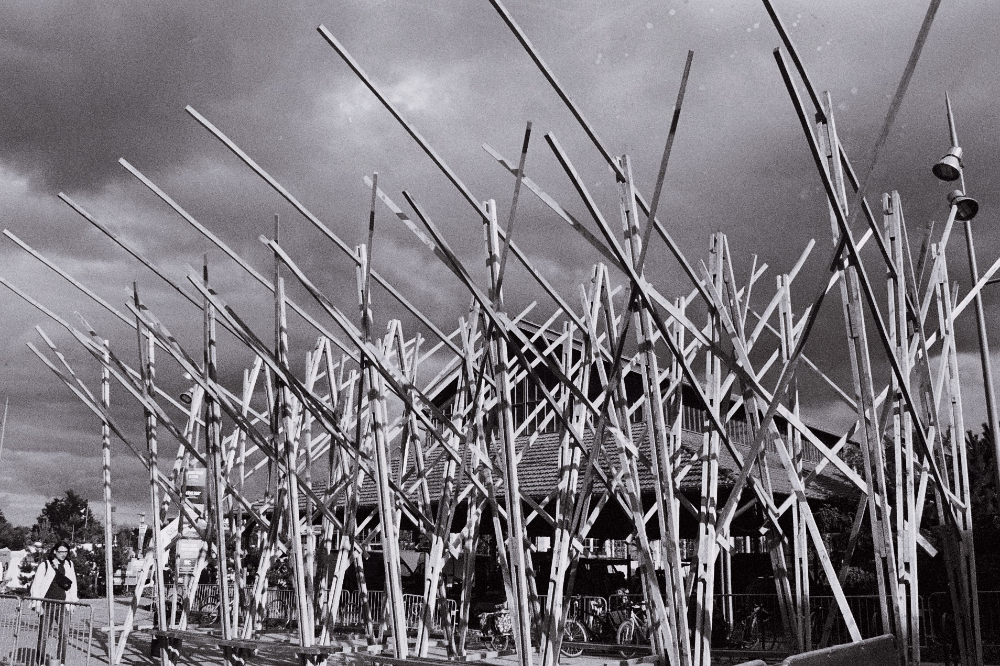

Architecture bois & réemploi
Des structures et aménagements qui montrent la matière, ses traces et son histoire, avec une écriture architecturale contemporaine.
Déconstruction & nouvelle vie
Identifier, déposer, transformer et réintégrer des éléments bois existants dans de nouveaux usages.
Scénographie & aménagement artistique
Faire de la matière un espace à vivre.
Une installation architecturale en bois où la structure devient à la fois matière, paysage et expérience. Cette approche illustre la capacité de SPO-LIA à croiser réemploi, construction bois et création artistique.

Cette section est prête à recevoir vos projets.
Nous pourrons ajouter pour chaque réalisation : provenance de la ressource, volume entrant, taux de réemploi, transformation, partenaires et résultat final.
Parler de votre projet →